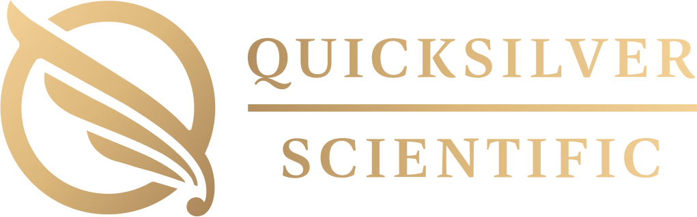
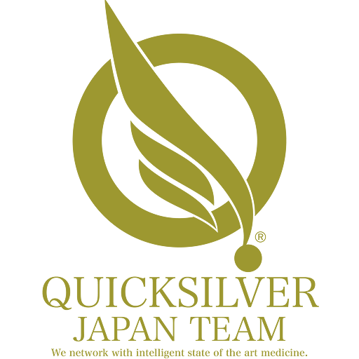

世界最先端の機能性医療科学者 Dr. Christopher Shade から
直接学ぶ、10年に1回の本社エグゼクティブ研修。

Quicksilver Scientific — Brand Story
世界の機能性医療は、
一つのラボから
動いている。
Quicksilver Scientific（QS）社は、コロラド州ルイスビルに本社・製造拠点を置く世界最高水準のサプリメント開発企業です。創業者 Dr. Christopher Shade による水銀スペシエーション解析特許、業界を一変させたリポソーマル・ナノ乳化技術、そして重金属デトックスの臨床プロトコルは、A4M、Mayo Clinic系、米国プロスポーツチームの現場で採用されています。
米国のバイオロジカルドクターが実際に毎日処方する製品を、あなたは今、源泉で学ぶことができます。
米国のバイオロジカルドクターが実際に使用。
A4M認定医・Mayo Clinic系クリニック・プロスポーツチームのチームドクター——彼らが毎日処方する製品を、あなたは開発者本人から直接学ぶことができます。
「日本の医師がまだ知らないことを、
コロラドの医師は日常の臨床でやっている。」
コロラド州ルイスビルは、単なる研修地ではありません。ここに Quicksilver Scientific の本社・製造ラボが存在するという、ただ一点だけで、医師がわざわざ地球の裏側まで渡る理由になります。米国の機能性医療・ロンジェビティ医療の最前線が凝縮されたこの地で、開発者本人から直接学ぶ——それは、A4M学会参加でも、国内セミナーでも、決して再現できない体験です。
Dr. Christopher Shadeは、「治療できない」と言われ続けた重金属毒性の問題に、純粋科学で答えを出した人物です。
Ph.D.（環境科学）を取得後、水銀の生物学・環境化学・分析的化学を徹底的に研究。世界初の水銀スペシエーション診断プロセスの特許を取得し、慢性疾患・免疫不全・神経疾患・自閉症に悩む患者たちの人生を変えてきました。その後、理論を製品へと昇華させるため Quicksilver Scientific を創業。業界の常識を塗り替えるリポソーマル技術を開発し、A4M・国際機能性医療学会で講演を続けています。
Dr. Shadeの講演は、A4Mや国際学会でも聴くことができます。
しかし——「あなたの患者の症例に合わせた質問に、
開発者本人が直接答えてくれる場」は、
世界中でこのプログラムだけが提供できる機会です。
学会で聴講することと、創業者に直接聞くこと。
この差が、臨床の確信を生む。
"The goal is not just to detox. The goal is to restore the body's own ability to detox itself — permanently."
— Dr. Christopher Shade, Ph.D.
QS本社のGMP対応製造施設・研究開発ラボ・品質管理エリアは、通常、外部に一切公開されていません。このプログラムに参加することで初めて、製品が生まれる現場を自分の目で見ることができます。製造現場を知った医師の言葉は、患者の心に届く深さが変わります。
「製造ラボを自分の目で見た医師の言葉は、患者の心に刺さる。
それはどんな学会発表も、どんな論文も、再現できないものだ。」
これは旅行ではありません。QS本社という世界で唯一の機能性医療ラボに4日間没入し、開発者・研究者・同志医師たちと共に学ぶ、エグゼクティブ研修プログラムです。
帰国後すぐに重金属デトックスのプロトコルを導入しました。患者さんの反応が全く変わり、「この先生でないとダメだ」と言っていただける症例が増えました。あの4日間がなければ、今の自費診療の成功はなかったと思います。
Dr. Shadeに直接「なぜこの配合にしたのか」を聞けたことは、他のどんな勉強会でも得られない体験でした。製品の背景にある哲学を理解してから処方すると、患者への説明が全く変わります。
コロラドの空気を吸いながら、同志と話しながら考えたことが、経営の方向性を変えました。「世界と繋がっている」という感覚は、帰国後もずっと続いています。
2026年9月20日（日）〜 9月23日（水・祝）｜木村先生ナビゲート同行

QSS JAPAN TEAMQSS JAPAN TEAMは、Quicksilver Scientific 創業者 Dr. Christopher Shade の後援のもと、2017年に発足した医師・歯科医師・獣医師を中心とする知的コミュニティです。「科学的根拠に基づいたサプリメント療法を、日本の医療の現場に届ける」というミッションのもと、継続的な教育・研究・臨床情報の共有を行っています。
「私たちは、米国 Quicksilver Scientific 社の
Dr. Christopher Shade 博士の後援により、
知的財源を資産とする
医師・歯科医師・獣医師の集合体です。」
2017年の初回コロラド研修以来、参加した医師たちは日本の機能性医療の先駆者として活躍しています。デトックス・重金属検査・リポソーマル技術・ロンジェビティ・バイオロジカル医療・ホリスティック医療・アマルガム除去——これらの先端領域で、QSSJAPANコミュニティは日本最高水準の知識と実績を持ちます。
「木村先生がいてくれたから、4日間を完全に吸収できた。英語が全くわからなくても、Dr. Shadeの意図が100%伝わった。」
— 2017年参加者 · 歯科医師
帰国後も続く4つの特権——認定・コミュニティ・工場価格・継続教育
Quicksilver Scientific 製品は、世界中の機能性医療クリニックで採用される高品質サプリメントです。一般市場では相応の価格で取引されますが、コロラド研修修了者には「QS社直接取引」の優遇価格で継続購入できる特別権利が付与されます。
自院の処方コストが変わるだけでなく、「製造元と直接繋がっている医師」という他では得られない立場が、患者への説明力と院の競争力を根本から変えます。
※ 具体的な価格詳細は無料相談にて個別にご案内します
| 購入ルート | 価格水準 | 直接関係 |
|---|---|---|
| 一般市場（Amazon等） | 定価の100% | なし |
| 国内代理店経由 | 定価の85〜95% | なし |
| QSS JAPAN 会員 | 優遇価格 | 間接的 |
| ★ コロラド研修修了者 | 工場直送優遇価格 | Dr. Shade直接 |
製造現場を見た医師だけが持てる、確信と価格優遇の両立
世界最先端の科学者から直接学び、日本の先駆者になる。
「詳しく話を聞いてから決めたい」という方も歓迎です。まずはお気軽にご連絡ください。担当者が個別にご対応いたします。
"世界最前線の科学が、
あなたの臨床を変える。"